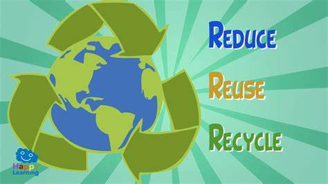
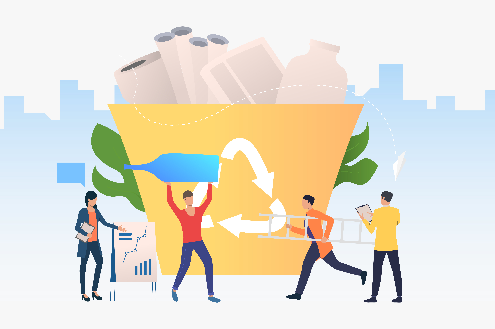
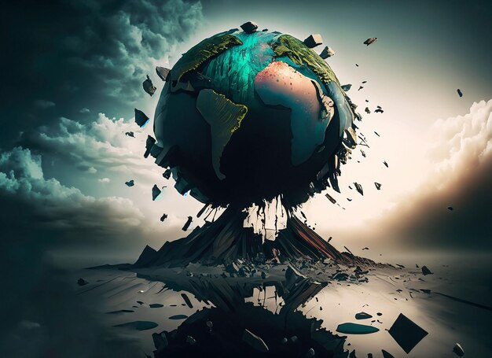
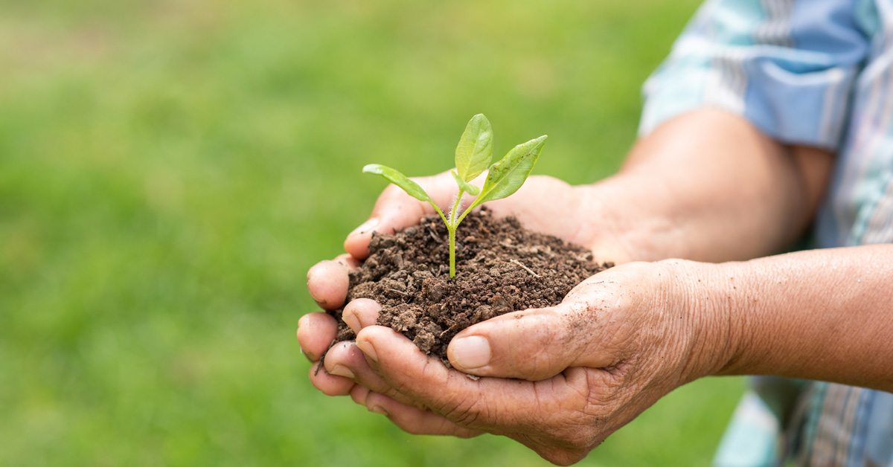
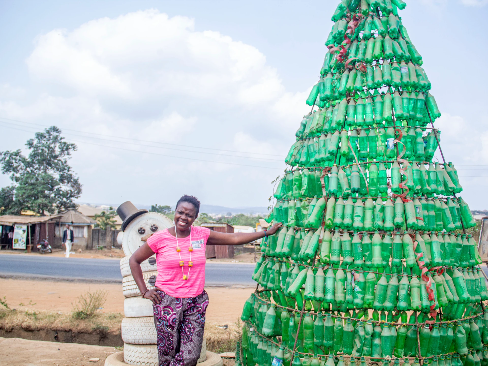
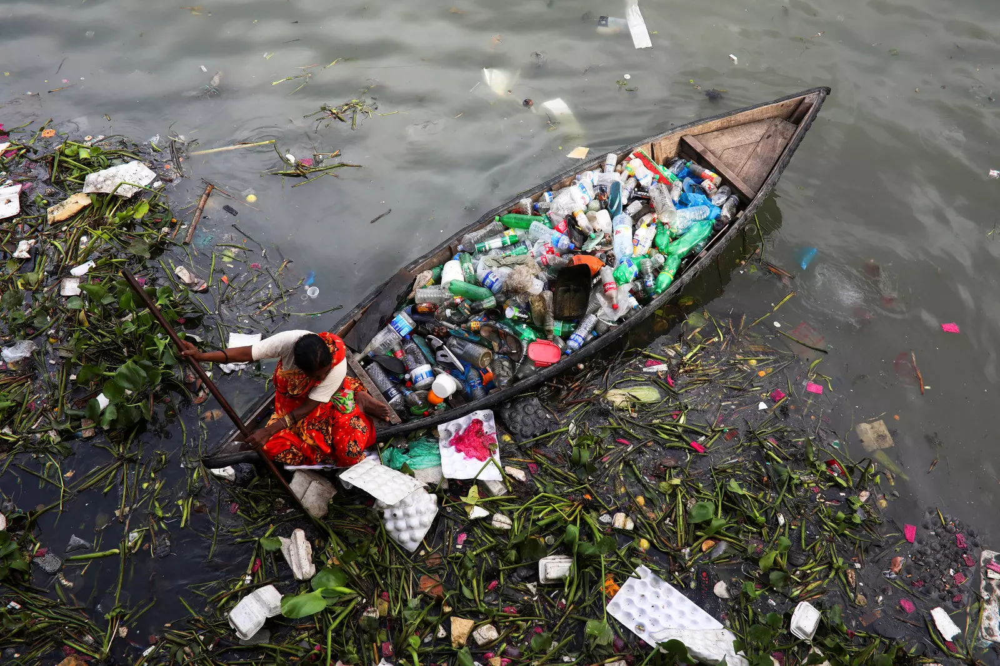
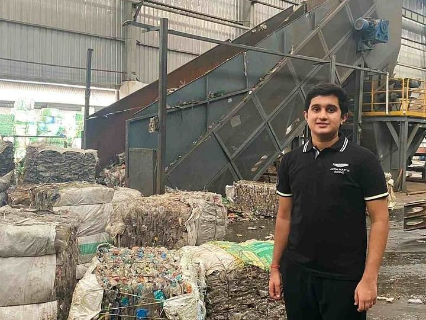
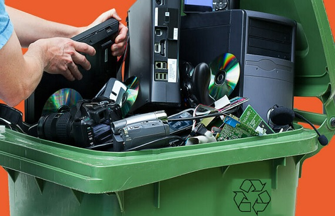

Crafting a Better Future from Your Everyday


Select From Above Options
What Is Upscaling?
Upcycling is a creative and environmentally conscious approach to reusing and repurposing items that might otherwise end up as waste. This practice involves taking discarded or unused materials and transforming them into new, often more valuable products. The goal is to give old or unwanted items a new lease on life, contributing to a more sustainable and eco-friendly lifestyle.
Upcycling differs from traditional recycling in that it focuses on upgrading the quality and functionality of the materials rather than breaking them down into raw materials for manufacturing. It encourages individuals to think outside the box and find innovative ways to repurpose items, reducing the demand for new resources and minimizing the environmental impact of consumer goods.
The upcycling process can include various do-it-yourself (DIY) projects that turn everyday objects into unique and functional pieces. For example, turning an old wooden pallet into a stylish coffee table, repurposing glass jars into decorative storage containers, or transforming discarded clothing into trendy fashion items. The possibilities are limitless, and the only requirement is a bit of creativity and imagination.
One of the significant advantages of upcycling is its positive impact on waste reduction. By finding new uses for old items, upcycling helps divert materials from landfills and reduces the overall waste burden on the environment. It also promotes resourcefulness and a shift towards a circular economy, where products are designed to be reused and repurposed, rather than disposed of after a single use.
Moreover, upcycling has social and economic benefits. It can create opportunities for entrepreneurship and small businesses, as individuals turn their upcycling skills into viable projects or products. Communities may also benefit from shared knowledge and resources, fostering a sense of collaboration and sustainability.
Impact Of Not Upscaling
Failing to upscale sustainable practices poses significant threats to both the environment and human well-being. Without widespread adoption of eco-friendly technologies and practices, the overexploitation of natural resources becomes more likely, leading to deforestation, overfishing, and depletion of biodiversity. This, in turn, contributes to environmental degradation, with pollution, habitat destruction, and climate change intensifying. The consequences of climate change, such as more frequent and severe weather events, rising sea levels, and disruptions to ecosystems, become increasingly pronounced. The health of individuals is also at risk due to environmental degradation, with air and water pollution causing respiratory diseases and waterborne illnesses. Economically, the costs associated with environmental damage and the impacts of climate change can lead to widespread economic challenges. Social inequalities may worsen as vulnerable communities bear the brunt of environmental degradation. Additionally, failure to upscale sustainable solutions may result in missed economic opportunities and hinder global cooperation to address pressing environmental issues. Embracing scalable and eco-friendly practices is essential for a more sustainable and resilient future, fostering innovation, economic growth, and collective efforts to combat global challenges.
How It Saves Nature?
Upscaling household items can play a crucial role in fostering environmental sustainability. This practice involves creating larger, more durable products, which, in turn, contributes to a reduction in overall resource consumption. By opting for fewer, but longer-lasting items, there is a subsequent extension of product lifespan, minimizing the need for frequent replacements. The energy efficiency of larger items is often higher, leading to reduced energy consumption. Additionally, upscaling can help in waste reduction by lowering the frequency of disposals. Furthermore, transportation efficiency is improved as larger items can be transported in bulk, reducing the environmental impact associated with transportation. Embracing upscaling encourages a shift towards sustainable materials and manufacturing processes, fostering a positive impact on the environment. This approach aligns with the principles of a circular economy, promoting the reuse, refurbishment, and recycling of products, thereby minimizing waste and contributing to nature conservation.
In conclusion, upscaling household items not only addresses the immediate issue of resource consumption but also aligns with the broader principles of a circular economy. By prioritizing durability, energy efficiency, and waste reduction, individuals and industries can contribute to a more sustainable future. Embracing the concept of upscaling encourages responsible consumption habits and promotes the adoption of environmentally friendly materials and manufacturing processes. In doing so, we take a significant step towards minimizing our impact on the planet, fostering a positive and lasting legacy for future generations.
How To Upscale?
Minimizing waste and promoting reuse are crucial steps towards sustainable living. To achieve this, individuals and businesses can adopt various practices. Firstly, embracing a circular economy model is essential, where products are designed for longevity, repairability, and eventual recycling. Encouraging the use of reusable materials and containers can significantly reduce single-use waste. Implementing efficient waste management systems, including recycling programs, helps divert materials from landfills.
Upscaling information is vital for raising awareness and education. Promoting eco-friendly habits through online platforms, workshops, and community events can empower individuals to make informed choices. Collaborating with local businesses to showcase success stories of waste reduction and reuse initiatives can inspire others to follow suit. Furthermore, providing easily accessible information on sustainable practices and showcasing innovative solutions can serve as a valuable resource for those looking to minimize their environmental impact.
By integrating these principles into daily practices and disseminating information effectively, we can collectively contribute to a more sustainable and eco-conscious future. Through collaboration, education, and shared commitment, we can minimize waste, promote reuse, and upscale the adoption of environmentally friendly practices across communities.
HEADLINES
 From trash to treasure: The Nigerians recycling waste into wealth  How a 'trash-to-treasure' mentality can change plastic waste  Trash to Tresure: Indian Startup from 17 yo Recycles 10 Tonnes of Plastic Everyday Turning it into Fabric  From Trash to Treasure: Innovative Technologies in E-waste RecyclingHelp and information
About UsFollow us
For the latest recycling news and tips